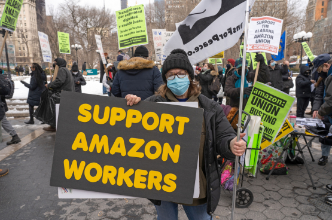
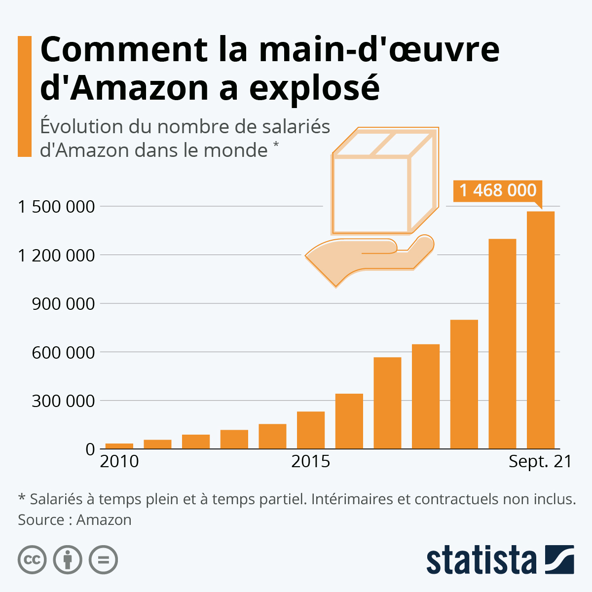

Résultats financiers d’Amazon
Amazon a publié ses résultats financiers pour le 4e trimestre 2020. Découvrez le chiffre
d’affaires, le bénéfice net et le flux de trésorerie d’exploitation de l’entreprise américaine.
Chiffre d’affaires trimestriel (Q2 2021) : 113,1 milliards de dollars, en
augmentation de 27,2 % par rapport à l’année dernière (88,912 milliards de
dollars au 2e trimestre 2020).
Bénéfice net (Q2 2021) : 7,778 milliards de dollars, en augmentation de 31,8 %
par rapport à l’année dernière (5,243 milliards de dollars au 2e trimestre 2020),
dont 3,147 milliards de dollars aux États-Unis (+47 %) et 362 millions de dollars à
l’international (+5 %).
Le flux de trésorerie d’exploitation a augmenté de 16 % au cours de ces 12
derniers mois, passant de 51,2 milliards de dollars à 59,3 milliards de dollars au 2e
trimestre 2021.
Pour Aurélie Filippetti, Amazon pratique une stratégie de concurrence déloyale
et de "vente à perte". "Une fois qu'ils seront en position dominante et auront écrasé notre réseau
de libraires, ils remonteront les prix", a dénoncé la ministre de la Culture. En réponse a
l'amendement "anti-Amazon"
En 2011, Amazon n'a payé que 3,3 millions d'euros d'impôts en France, au lieu de 10,9,
grâce à un astucieux montage fiscal, révèle une étude de la Fédération française des
télécoms. A l'instar d'Amazon, Apple, Google ou encore Facebook "emploient la même
méthode : les bureaux français sont considérés comme de simples prestataires au service de maisons mères
basées en Irlande, en Suisse ou au Luxembourg. (…) Amazon France facture des prestations de service à une
maison mère et n’a déclaré que 110 millions d’euros de recettes, alors que les revenus sont estimés entre 1,5 et
2 milliards d’euros", relève La Tribune (PDF). En juillet, l'OCDE a d'ailleurs présenté au G20
Finance un plan d'action pour combattre l'optimisation fiscale des multinationales,
indiquait Le Figaro.

Un peu partout dans le monde, les conditions de travail des salariés d'Amazon sont
régulièrement montrées du doigt. Dans son livre En Amazonie, infiltré dans le "meilleur des
mondes" (Fayard, 2013), le journaliste Jean-Baptiste Malet, qui s'est fait embaucher dans le
dépôt logistique de Montélimar (Drôme), décrit la précarité de cet environnement. Chaque
nuit, il marche 20 km pour aller prélever les objets commandés par les clients d'Amazon
(des pratiques qui se sont généralisées, notamment dans la grande distribution) et les
transmettre aux employés charger de préparer les colis, qui font du surplace pendant huit
heures. Il évoque des fouilles aléatoires, une pression permanente, des pauses qui n'en
sont pas ("Chez Amazon, on n'a pas le droit de parler"), des quotas de productivité qui
doivent "obligatoirement être en perpétuelle croissance".
Alors que de nombreuses entreprises ont été contraintes de reporter leur plan d'embauche voire de
supprimer des postes avec la crise sanitaire, Amazon a de son côté connu une vague de recrutement sans
précédent. Le géant du commerce en ligne a en effet créé plus de 500 000 emplois à
temps plein et à temps partiel en 2020, auxquels sont venus s'ajouter 170 000 nouvelles embauches au cours des neuf
premiers mois de 2021. En l'espace de deux ans, la main-d'œuvre de l'entreprise a ainsi presque doublé à
l'échelle mondiale.
